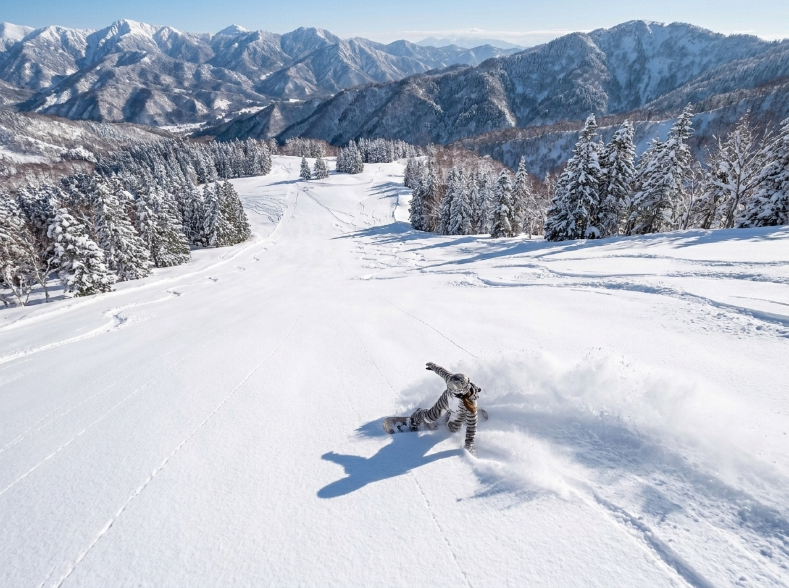
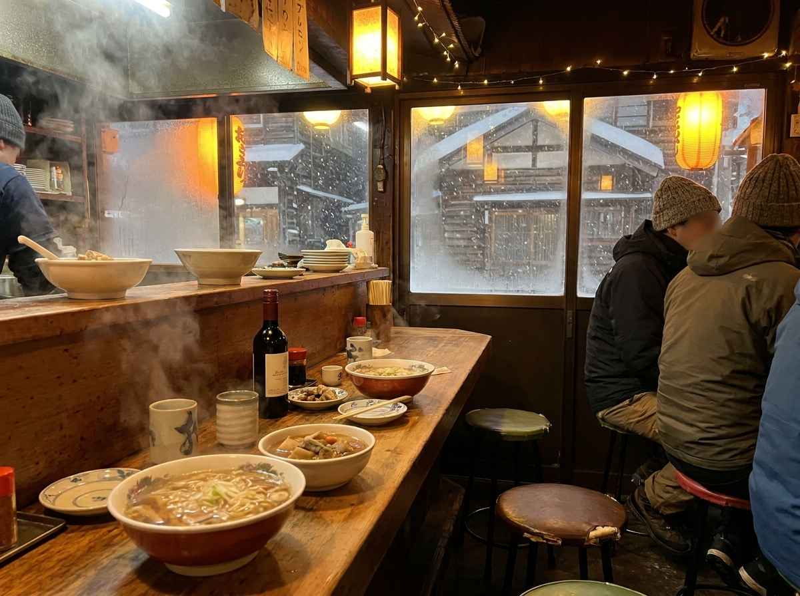
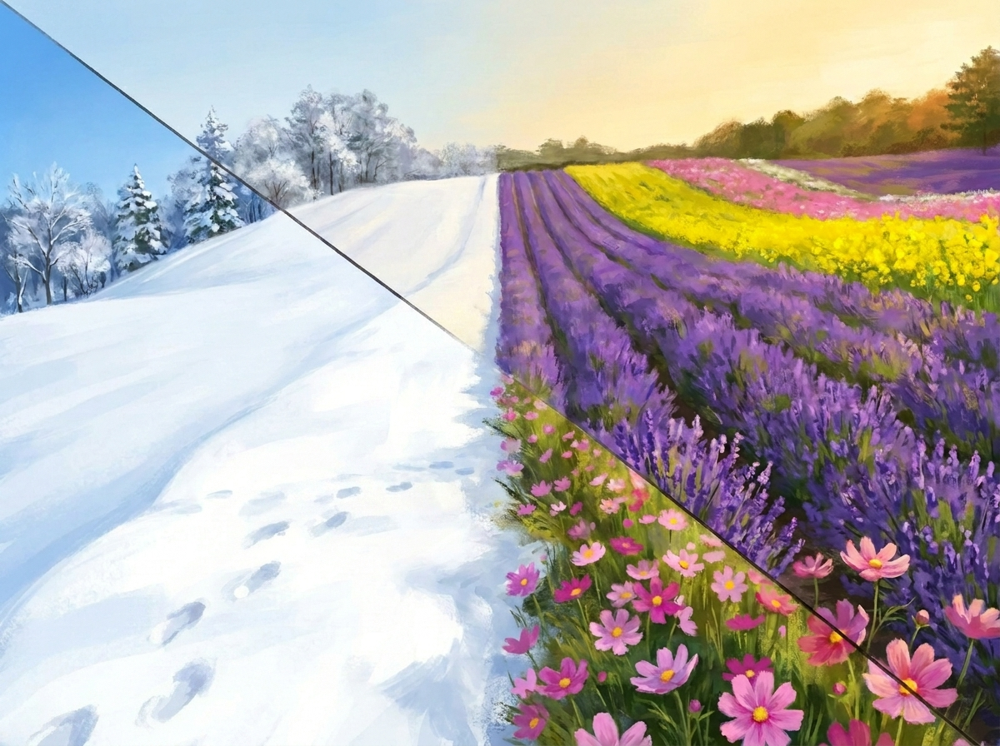

Beyond the Purple Carpet: Furano's Best-Kept Winter Secret
Why serious skiers are trading crowded slopes for central Hokkaido's "ultra-dry" powder
by Sari
Hey hey, it's Sari! 🐾
So Kiri just finished telling everyone about the purple fields, and — okay, it's a great story, I cried a little. But then she gave me this look, this "your turn now" look, and said something about snow being "unusually dry, apparently," like she wasn't even sure. Rude. She was very sure. She just didn't want to be the one to get excited about it.
Because here's the thing nobody tells you: the exact same hills that go full rainbow in summer turn into one of the best snowboarding zones on the entire planet in winter. Not "pretty good for Japan." Best on the planet. I don't make the rules, the snow does.
Let me explain, because this is the part where I get to be loud about something for once.
The Snow That Squeaks
Most of Japan's famous powder towns sit close to the coast, which sounds nice until you learn what that does to the snow — sea moisture makes it heavier, wetter, stickier. Good for snowballs. Not amazing for floating.
Furano sits inland, tucked into the middle of Hokkaido, away from all that moisture. What falls here instead is shockingly dry. So dry it genuinely squeaks under your board. Locals call it "Bonchi Powder" — basin powder — and once you've ridden it, every other kind of snow feels a little bit like wet sand in comparison.
This isn't a hidden opinion, by the way. The resort has hosted the FIS Alpine Ski World Cup roughly ten times, plus snowboard World Cup events on top of that. It's also one of the Japanese resorts on the Ikon Pass, which is the kind of detail serious skiers check before they check anything else. This mountain has receipts.
And somehow, it's still nowhere near as crowded as the big-name resorts everyone already knows about. Make of that what you will. I have opinions. I'm keeping them to myself. Mostly.

This is not a metaphor. It really does squeak.
Not a Resort Built for Tourists
Here's what I actually love about it, though — and this is the part that has nothing to do with snow quality.
Step off the slopes in a lot of famous resort towns and you're still inside The Resort. Everything's built for visitors, nothing's built for anyone who actually lives there. Furano isn't like that. Ski down, and you land in an actual town — an actual, ordinary, Hokkaido town, with an actual town's worth of small restaurants that were never designed with tourists in mind.
Which means après-ski here means walking into a tiny local izakaya, sitting at a counter that's seen forty winters, and eating outrageously good Hokkaido food while someone pours you a local sake or a glass of the region's own wine. No performance. No "authentic experience" price tag. Just a warm room and good food after a cold day, the same way it's always been.
I promise you, that part stays with people longer than the skiing does.

After the mountain, this is the part nobody skips.
Same Mountain, Two Different Coats
Okay, and here's the part that connects back to Kiri's whole thing, because apparently we're doing themes now.
The snow that piles up on these slopes all winter doesn't just vanish in spring — it melts, sinks into the ground, and becomes the water that feeds those wild, multicolor summer fields she was going on about. So this mountain isn't living two separate lives. It's living one long one. Winter fills it up. Summer spends it. Repeat, forever.
I like that. A mountain that works all year instead of showing off for one season and going quiet for the rest.

Same slope. Same snow, eventually. Just wearing a different coat.
Honestly? Winter Furano might be the more impressive version of this place. The powder's world-class, the town is real, the food after is unbeatable. I'd put it up against basically anywhere.
But — and I say this with love — if we made a poster out of it, it would just be a white rectangle. Gorgeous in person. Extremely boring on a wall. So yeah, I get why the summer fields are the ones that end up framed and hanging somewhere. Doesn't mean winter's any less special. It just means it's the kind of special you have to actually go stand in.
Anyway. Pack a board, not a poster tube. I'll be on the mountain.